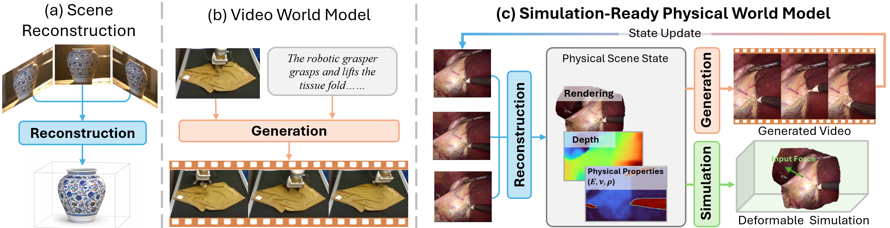
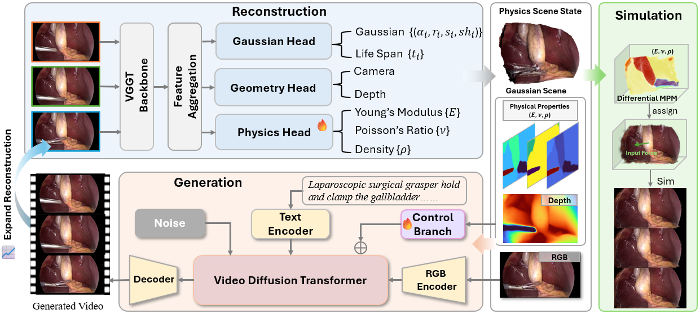
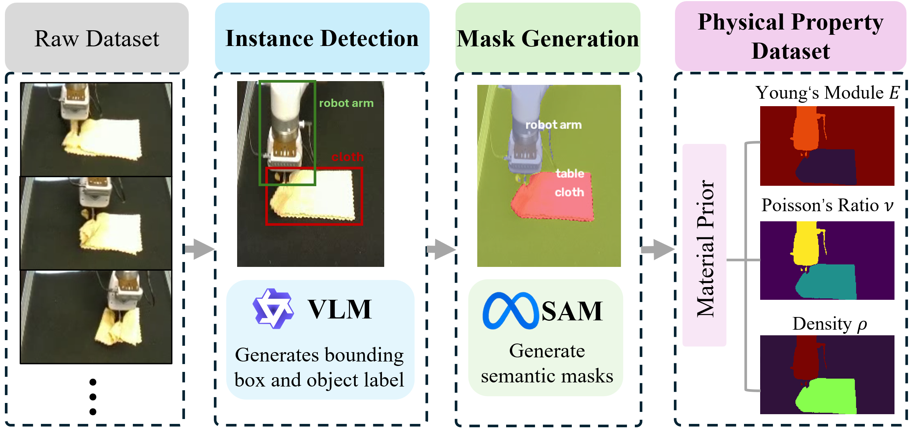
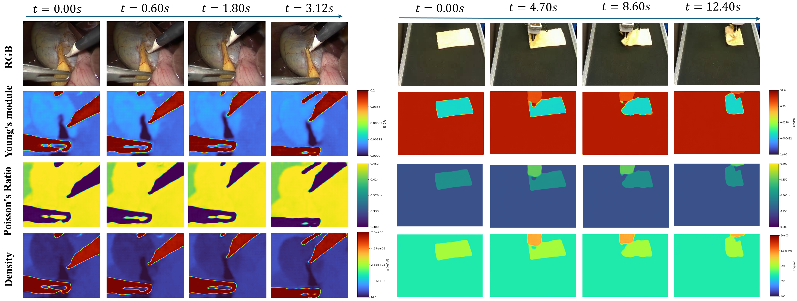
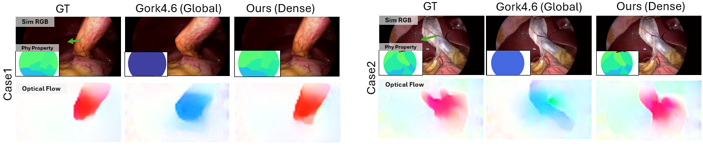
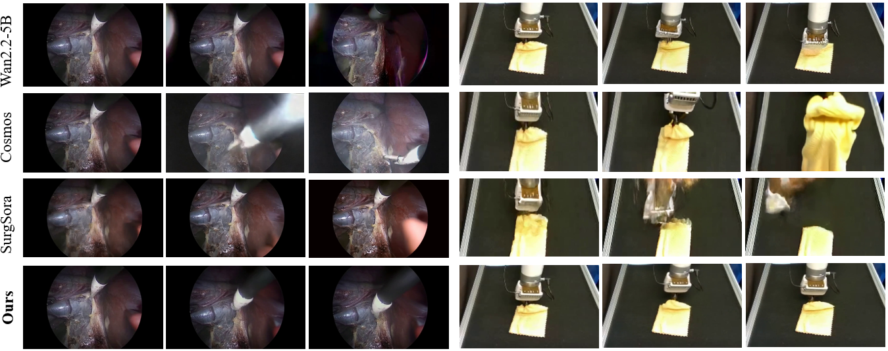
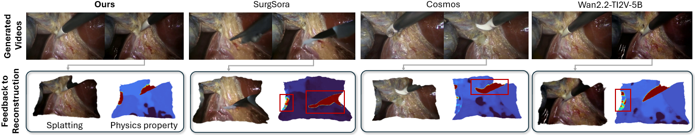

Shared 4D state
One scene state links reconstruction, video generation, and deformable simulation.
Anonymous submission
Deformable Simulation-Ready 4D World Modeling
from Monocular Videos
Overview
PhysVerse turns monocular video into a 4D scene state with geometry and dense material maps, then uses that state for future video prediction and soft-body MPM.
One scene state links reconstruction, video generation, and deformable simulation.
A Physics head predicts Young's modulus, Poisson's ratio, and density with geometry in a single pass.
The same depth and material maps condition a frozen video diffusion model.

Method
From monocular video, a frozen reconstructor and a Physics head produce geometry and dense material maps. The same state conditions future video prediction, initializes MPM, and can be refreshed from generated frames.


Material maps
Predicted maps remain aligned with moving objects. In surgical sequences, metal instruments receive higher Young's modulus and density, and lower Poisson's ratio, than surrounding soft tissue. Gallbladder and fat receive lower Young's modulus than muscle, following the category-level reference values. The same spatial alignment appears in robotic cloth manipulation.

Deformable simulation
Each comparison uses the same reconstructed geometry and applied force. Only the material assignment changes. Against a single global assignment, the dense map reduces nRMSE by 78.3% and EPE by 27.4%. The reference rollout uses the annotated material maps.

Video generation
On Cholec80-5k, PhysVerse is best on most reported metrics. Relative to the second-best baseline, Cosmos-H-Surgical, FVD, FID, and LPIPS drop by 12.7%, 4.3%, and 6.5%. On VLA-OS, PhysVerse is best on most metrics. Qualitatively, object geometry and appearance stay more stable across frames.

Generated future frames are fed back into the frozen reconstructor. PhysVerse better preserves scene geometry and instrument structure, and the recovered material boundaries stay aligned with the reconstructed objects. These frames retain enough geometric and material information to rebuild a scene state for a later round of prediction and for initializing MPM.
